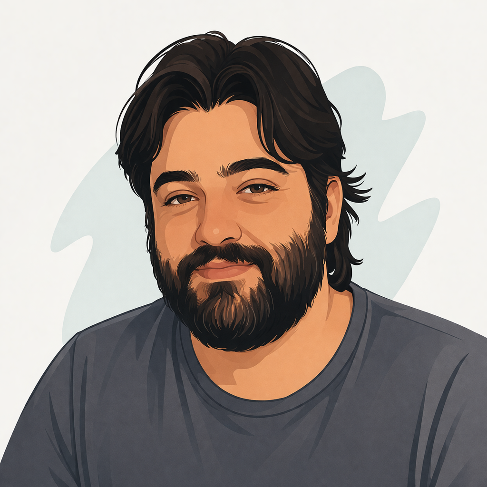

Professor @ IF Goiano | Software Engineering Researcher
Interested in research collaborations, PhD opportunities, and projects involving APR, LLMs and Software Engineering. Reach out via LinkedIn or GitHub.
I am a professor at IF Goiano, teaching Software Engineering, Databases, and Programming Languages. My research focuses on Empirical Software Engineering, particularly in Automated Program Repair (APR) and the use of Large Language Models.
Full list available on Google Scholar.